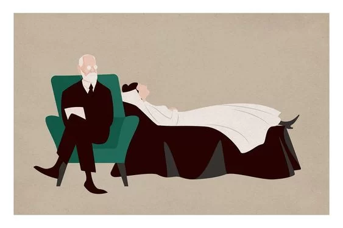

<!DOCTYPE html>
<html lang="en">
<head>
    <meta charset="UTF-8">
    <meta name="viewport" content="width=device-width, initial-scale=1.0">
    <title>Psicoanálisis</title>
</head>
<body>
    <h1></h1>
    
</body>
</html>
<!-- LA ESTRUCTURA BÁSICA DE UN SITIO WEB -->
<!-- Cómo crearlo rápido : ! o con html:5 -->
<!-- En HTML siempre van a haber etiquetas de apertura y cierre -->
<!-- como comentar más rápido - ctrl + } -->

<!-- Tipo de documento HTML -->
<!DOCTYPE html>

<!-- Lenguaje del sitio web -->
<html lang="es">

<!-- HEAD es donde se agrega información no visible del sitio web pero que es importante para su funcionamiento -->
<head>
    <!-- Admite caracteres especiales como @¨*´, etc -->
    <meta charset="UTF-8">
    <!-- Permite que el sitio web se pueda ver después en otros dispositivoscomo pc o tablet -->
    <meta name="viewport" content="width=device-width, initial-scale=1.0">


    <!-- Link para usar íconos de boxicons -->
    

    <!-- Link de los estilos -->
    <link rel="stylesheet" href="Psicoanálisis.css">

    <!-- link de estilos -->
    <link rel="stylesheet" href="./styles/Psicoanálisis.css">


<!-- Link de boostrap, estilos de boostrap-->
<link href="https://cdn.jsdelivr.net/npm/bootstrap@5.3.3/dist/css/bootstrap.min.css" rel="stylesheet" integrity="sha384-QWTKZyjpPEjISv5WaRU9OFeRpok6YctnYmDr5pNlyT2bRjXh0JMhjY6hW+ALEwIH" crossorigin="anonymous">


    <!-- Link de favicon -->
   <link rel="inicio" href="./assets2/favicon.jpg" type="inicio">
    <!-- Título de la página que aparece en el navegador -->
    
</head><h1>¿Qué es el Psicoanálisis?</h1>


<!-- BODY es el cuerpo del sitio web, acá se agregan los elementos visibles del sitio web -->
<!-- script en particular nos conecta con las funcionalidades de bootstrap-->
<script src="https://cdn.jsdelivr.net/npm/bootstrap@5.3.3/dist/js/bootstrap.bundle.min.js" integrity="sha384-YvpcrYf0tY3lHB60NNkmXc5s9fDVZLESaAA55NDzOxhy9GkcIdslK1eN7N6jIeHz" crossorigin="anonymous"></script>

<body>
  <!--  página de navegacion -->
<nav class="navbar navbar-expand-lg bg-body-tertiary">
  <div class="container-fluid MiMenudenavegacion">
    <a class="navbar-brand" href="./index2.html">Freud</a>
    <button class="navbar-toggler" type="button" data-bs-toggle="collapse" data-bs-target="#navbarNav" aria-controls="navbarNav" aria-expanded="false" aria-label="Toggle navigation">
      <span class="navbar-toggler-icon"></span>
    </button>
    <div class="collapse navbar-collapse" id="navbarNav">
      <ul class="navbar-nav">
        <li class="nav-item">
          <a class="nav-link active" aria-current="page" href="./inicio.html">Inicio</a>
        </li>
        <li class="nav-item">
          <a class="nav-link" href="./Psicoanálisis.html">Psicoanálisis</a>
        </li>
        <li class="nav-item">
          <a class="nav-link" href="./LaMente.html">Estructura De La Mente De Freud</a>
        </li>
        <li class="nav-item">
          <a class="nav-link" href="./Etapas.html">Etapas Psicosexuales</a>
          <li class="nav-item">
            <a class="nav-link" href="./registro.html">Registro</a>
            <li class="nav-item">
              <a class="nav-link" href="./ingreso.html">Ingreso</a>
        </li>
      </ul>
    </div>
  </div>
</nav>
<!--  fin de la página de navegacion -->

    <!-- ETIQUETAS SEMÁNTICAS - ME DAN INFORMACIÓN DEL CONTENIDO DE MI SITIO WEB -->
    
    
    <!-- HEADER es el encabezado del sitio web -->
    <header>

        <!-- NAV Etiqueta para menú de navegación -->
        <nav class="menuNavegacion">

            <!-- IMG Etiqueta para imágenes -->
            

            <!-- OL Etiqueta para lista desordenada -->
            <ul class="navegacion">
                <!-- LI Etiqueta para elemento de una lista -->
                <!-- A Etiqueta que me referencia a otros links -->
                
            </ul>
        </nav>

        <!-- Banner informativo -->
        <!-- SECTION etiqueta para dividir por secciones de contenido -->
        <section class="banner">
             <!-- IMG Etiqueta para imágenes -->
            
        </section>
    </header>
    

    <!-- MAIN Etiqueta dentro de la cuál va el contenido de la página -->
    <main>

        <!-- Sección de información 1 -->
        <section class="informacion1">
            <!-- H1 Etiqueta para título principal, sólo debe haber uno por página -->
            
            
            <!-- ARTICLE Etiqueta para contener información -->
            <article class="contenedorInformacion">
                <!-- P Etiqueta para escribir párrafos o textos diferentes a títulos -->
                <p>El psicoanálisis es una disciplina que estudia la mente humana, sus procesos inconscientes y su influencia en el comportamiento. Fue desarrollado por Sigmund Freud a finales del siglo XIX y principios del XX. Aquí te presento una descripción completa:</p>
<h2>El Psicoanálisis: Entendiendo la Mente Humana</h2>
<p>El psicoanálisis es una disciplina que busca comprender la mente humana, especialmente en términos de los procesos inconscientes que influyen en el pensamiento, las emociones y el comportamiento. Fue desarrollado por Sigmund Freud a finales del siglo XIX y principios del XX, y desde entonces ha evolucionado y generado diversas escuelas y enfoques.</p>
<p>En el corazón del psicoanálisis está la idea de que gran parte de nuestra experiencia mental y emocional está influenciada por fuerzas y procesos inconscientes. Freud propuso que la mente humana está dividida en tres partes: el consciente, el preconsciente y el inconsciente. El inconsciente, según él, contiene deseos, impulsos y recuerdos reprimidos que pueden influir en nuestro comportamiento y emociones de formas que no somos conscientes.</p>
<p>El método principal del psicoanálisis es la exploración del inconsciente a través del diálogo entre el paciente y el psicoanalista. Este diálogo, a menudo llamado "asociación libre", implica que el paciente hable libremente sobre sus pensamientos, sentimientos y recuerdos, mientras el terapeuta busca patrones, conflictos y dinámicas subyacentes. Otras técnicas incluyen la interpretación de los sueños, el análisis de los lapsus linguae (actos fallidos) y la transferencia, donde los sentimientos y experiencias del paciente hacia figuras significativas se proyectan en el terapeuta.</p>
<p>El objetivo del psicoanálisis es ayudar al paciente a hacer conscientes los procesos inconscientes que pueden estar contribuyendo a sus dificultades emocionales o comportamentales, permitiéndoles entenderse a sí mismos de manera más profunda y realizar cambios significativos en su vida. Aunque el psicoanálisis ha sido criticado y ha perdido popularidad en algunos círculos, sigue siendo una influencia importante en la psicología y la comprensión de la mente humana.</p>


<h2>Principios Fundamentales</h2>
<p>1.	El inconsciente: Freud postuló que una gran parte de nuestra mente opera fuera de nuestra conciencia, influenciando nuestros pensamientos, sentimientos y comportamientos de manera poderosa y a menudo desconocida para nosotros mismos. El inconsciente contiene deseos, recuerdos, impulsos y conflictos que pueden ser difíciles de acceder directamente.</p>
<p>2.	La estructura de la personalidad: Freud dividió la mente en tres partes: el ello, el yo y el superyó. El ello representa los impulsos instintivos y las necesidades básicas, el yo es la parte consciente y racional de la mente que mediar entre el ello y el mundo externo, y el superyó es la parte moral internalizada que contiene normas y valores sociales.</p>
<p>3.	Procesos psicológicos: Freud identificó varios mecanismos de defensa que utilizamos para protegernos del malestar psicológico, como la represión (olvidar o negar recuerdos o pensamientos dolorosos), la proyección (atribuir nuestros propios sentimientos o pensamientos a otros) y la sublimación (canalizar impulsos inaceptables en actividades socialmente aceptadas).</p>
<p>4.	Desarrollo psicosexual: Freud sugirió que la personalidad se desarrolla a través de una serie de etapas psicosexuales (oral, anal, fálica, latencia y genital), cada una de las cuales está marcada por conflictos y desafíos particulares. Los problemas no resueltos en estas etapas pueden llevar a fijaciones o trastornos psicológicos en la edad adulta.</p>


<h2>Aplicaciones Clínicas</h2>
<p>El psicoanálisis no solo es una teoría, sino también una forma de terapia que busca explorar los conflictos inconscientes y resolver los problemas emocionales. Algunas de las técnicas utilizadas en la terapia psicoanalítica incluyen la asociación libre (decir lo primero que viene a la mente sin censura), la interpretación de los sueños, el análisis de la transferencia (proyección de sentimientos hacia el terapeuta) y la atención a las resistencias (barreras que impiden el acceso a los pensamientos o sentimientos inconscientes).</p>

<h2>Críticas y Evolución</h2>
<p>A lo largo de los años, el psicoanálisis ha enfrentado críticas y ha evolucionado en diversas direcciones. Algunos críticos señalan su falta de evidencia empírica y su enfoque excesivamente centrado en el pasado y los impulsos sexuales. Sin embargo, muchas de las ideas freudianas han influido en otras áreas de la psicología y la terapia, y se han desarrollado enfoques más contemporáneos como la psicología psicodinámica y la terapia psicoanalítica breve.</p>
<p>En resumen, el psicoanálisis es una poderosa herramienta para comprender la mente humana y abordar una amplia gama de problemas emocionales y psicológicos. Aunque ha evolucionado desde los días de Freud, su legado sigue siendo relevante en el campo de la psicología y la salud mental.</p>


              </article>
            
        </section>

        <!-- Sección de información 2 -->
        <section class="informacion2">
            <!-- H2 Etiqueta para títulos -->
            
            
            
            <!-- ARTICLE Etiqueta para contener información -->
            <article class="contenedorInformacion">
                

                <!-- P Etiqueta para escribir párrafos o textos diferentes a títulos -->
                
            </article>
        </section>
        


    </main>

    <!-- FOOTER Etiqueta dentro de la cual va el pie de página del sitio web -->
    <footer class="pie-pagina">
      <div class="grupo-1">
        <div class="box">
          <figure>
            <a href="1">
              
            </a>
          </figure>
        </div>
        <div class="box">
          <h2 class="titulo1">SOBRE NOSOTROS</h2>
          <p class="parafo1">Jhon Fredy Urbano Martínez Psicólogo ingresado de la Corporación Universitaria Iberoamérica, a través de los aprendizajes obtenidos en psicología, nos encontrarnos con diversas teorías entre ellas destaca el psicoanálisis, esta teoría nos brinda herramientas para comprender mejor el comportamiento humano. Nos permite acercarnos a comprender el porqué de la conducta humana y que hay detrás de esta conducta.</p>
        </div>
        <div class="box">
          <h2 class="titulo2">Síguenos a través de los siguientes canales de comunicación</h2>
          <div class="red-social">
            
            
            
            
            
          </div>
        </div>
        <div class="grupo-2">
          <small>&copy; 2024 <b>logo tipo</b> - Todos los Derechos Reservados</small>
        </div>
      </div>
    </footer>
